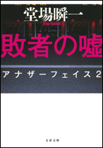
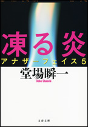

| アナザーフェイス読本 完全版【文春e-Books】 | |
| 堂場 瞬一 | |
| 文藝春秋 (2018) | |
＊この電子書籍は縦書きでレイアウトされています。
＊読む際のご注意、お断り等についてはこちら をお読み下さい。
目 次
最も刑事らしくない刑事の活躍はここから始まった！
著者が語る「アナザーフェイス」誕生秘話
（初出「本の話」２０１０年８月号）
「アナザーフェイス」×「警視庁追跡捜査係」
（初出「スペシャル ブックレット 堂場瞬一という謎。」）
「親子の肖像 アナザーフェイス 」刊行記念
（初出「アナザーフェイス 巻末対談」）
（初出「闇の叫び アナザーフェイス９」解説）
著者インタビュー
（初出「闇の叫び アナザーフェイス９」折込チラシ）
タイトルをクリックするとその文章が表示されます。
文春ｅ‐Ｂｏｏｋｓ
「アナザーフェイス」読本 完全版
最も刑事らしくない刑事の活躍はここから始まった！
「アナザーフェイス」試し読み
堂場瞬一
第一部 五万人のダミー
１
サツマイモ一本八十七円......これは安い。ジャコと焚き合わせよう。優 斗 は小魚が苦手だが、サツマイモと一緒だと何とか食べてくれる。カルシウムは大事だ......サツマイモは早く火が通るから、他にもう一品作れるな。やはり優斗の嫌いなピーマンが安い。栄養バランスの問題もあるが、今のうちに好き嫌いをなくしておきたかった。問題は、どうやって食べさせるかだ。冷蔵庫にひき肉があったから、濃い目の味つけで炒め合わせてみるか。肉と一緒なら、誤魔化せるかもしれない。
朝刊から引き抜いてきた近くのスーパーのちらしと首っ引きになるのは、大 友 鉄 の昼休みの日課だった。警視庁一階の食堂。親子丼を食べながら、今日の買い物をメモしていく。何もなければ、今日も六時半には優斗を引き取れるだろう。その際に義母と顔を合わせる儀式にはまだ慣れないが、これも生活の一部だ。
「よう、テツ。今夜のメニューはもう決まったか？」
顔を上げると、捜査二課にいる同期の刑事、武 本 一 朗 が盆を持って立っていた。狐を思わせる細い顔に、すかした笑みを浮かべている。大友がちらしを畳んでワイシャツのポケットに入れた途端、向かいに腰を下ろす。
「サツマイモとジャコの煮物。それにピーマンとひき肉のキンピラ」大友はさらっと答えた。
「帰ってから、そんなに手の込んだ料理を作ってる暇があるのか？」武本が蕎麦を手繰った。警視庁の食堂の蕎麦はやけに長く、箸で持ち上げようとして腕が伸び切ってしまうこともある。
「大したことはないよ。サツマイモの煮物は二十分でできるし、その間にキンピラも作れるから」
「うちの嫁にも見習わせたいもんだね。今夜なんか、何を食わされることか......」武本が力なく首を振る。「ところで優斗、元気か？」
「好き嫌いが多くて困ってる」
「今、二年生だっけ？」
「そう。小学生になったのに、まだまだ子どもで困るよ」
母親──大友の妻がいないのが最大の理由だ。学校が終わってから大友が帰るまで預かってくれている義母の矢 島 聖 子 が、甘やかしているせいもあるだろう。
「小学生なんてのは、基本的に子どもだよ」蕎麦をどっぷりと汁に浸しながら武本が言った。
「早く大人になってもらわないと困るんだ」
「お前が一線に復帰するためにも、な」顔の半分だけで笑って、武本が音をたてて蕎麦を啜った。
一線ね......大友は丼を取り上げた。捜査一課時代の仕事の記憶は、日々薄れつつある。炎天下の街を聞き込みに回る時、髪の中を伝う汗。相手の表情の裏に潜む物を見いだそうと集中する時に、決まって襲ってくるかすかな頭痛。不貞腐れた容疑者の心をマッサージするように解 していく取り調べ──ほんの二年前までは、それが大友の日常だった。自分は一生こうやって仕事をしていく、それが当然だと思っていたのに、将来の計画はあっさり挫折して、素早く過去になろうとしている。
「ところで最近、忙しいのか？」頭を振ってから、大友は武本に訊ねた。
「ああ、まあ」武本が言葉を濁す。「ここだけの話、暇だ」
「何だよ」大友は丼を置いて、両手を前へ投げ出した。「しっかりしてくれ。せっかく現場にいるんだから、仕事してもらわないと」
「二課の仕事の基本は情報収集なんだぜ」武本が自信たっぷりに言い切った。「お前みたいな一課育ちの乱暴者には分からないだろうな。起きた事件に対処するだけじゃ、いつまで経っても知恵がつかないぜ」
「悪かったな」むっとして言い返し、大友は箸を武本に突きつけた。「お前が頭脳労働専門の人間だってことは分かったよ。だけどたまには事件を挙げないと、頭が干上がっちまうぜ」
「刑事総務課の人間に言われると怖いな」武本がにやりと笑った。「サボってるわけじゃないからな。変な査定しないでくれよ」
「僕は査定には係わってない」大友は溜息をついた。だったら何をしている？ 暇潰し、というのが一番適当な説明かもしれない。刑事総務課の仕事は、一言で言ってしまえば刑事部全体の調整役である。経費の書類を処理し、課と課の間の協力体制が円滑に進むように根回しをし、会議を上手く運営して議事録を作る。様々な研修のセッティングも大事な仕事だ。定時で仕事が終わるのはありがたかったが、大友はこの二年、ずっとアイドリングが続いているような感覚を消せずにいる。こういう仕事が必要なのは分かっているが、「刑事」という名称は外すべきではないかと常々考えていた。
「だけど俺も、サボってるわけじゃないからな」武本が抗議した。「ちゃんと日々情報収集はしてる」
「例えば」
武本が急に周囲を見回し、前屈みになる。二課の奴は......と大友は苦笑を漏らした。何でも秘密主義。握っている情報にどれだけの価値があると思っているのだろう。政治家が絡んでくるような大きな事件になれば、東京地検に持っていかれてしまうのに。
「テツだから話すけどさ、やばい銀行があるんだ」
「金絡みか」
「銀行だから、金絡みは当然さ......不正融資の噂なんだ。回収の可能性が少ない取引相手に対して、無理に融資してたってやつ」
「そういうの、よくある話じゃないのか？ 特に最近は」
「ただ、その裏で別の金が動いていたとなれば、事件になる」
「賄賂？」
「一種の、ね」
「僕たち一般の預金者には関係なさそうな事件だな。目に見えないところで金が動いてるだけだろう？ 被害者のいない犯罪じゃないか」
「だから一課の人間は嫌いなんだよ」武本が唇をねじ曲げる。「そういう単純思考しかできないんだから」
「大きなお世話だ。ところでそれ、どこの銀行なんだ」
「それはまだ秘密」武本がいっそう声を絞った。
「何だよ、もったいぶってるのか？」大友は身を乗り出した。「僕が預金してる銀行だったらどうするんだ」
「それは心配だな──やっと人の話を真面目に聞く気になったか」武本がにやにや笑った。「ま、それで銀行が傾くような案件じゃないから心配するな」
「支店レベルか？ 本店の方か？」
「そこまでは......」武本が口を濁す。「まだ本当に噂の段階だからさ。もう少し事情がはっきりしたら耳打ちしてやるよ。その段階で、預金を引き上げるかどうか、決めればいいんじゃないか？」
「引き上げなくちゃいけないほど大変な話なのか」
「いや、だから、まだ分からないって」武本が苦笑した。「そういうことを判断できるほどの情報はないから」
「そういう情報をいち早く知って資産の保全を計ったら、一種のインサイダー取引になるんじゃないかな」
「変な心配するなよ」武本が口一杯に蕎麦を頬張った。ゆっくり噛んでから飲み下し──そうしているとひどく不味そうに見える──話を再開する。「俺たちの情報のうち、事件になるのは一割もないんだぜ」
「それ、何の自慢にもなってないぞ」
「だから、情報イコール事件っていう発想から自由になれって。刑事総務課の人間が、一課の考えだけに凝り固まってたら仕事にならないだろう」
「まあな」当たっているだけに、いちいちカチンとくる。
「それで、復帰の目処は？」
「分からない」正直に答えた。自分でもタイミングが掴めていないのだ。妻が亡くなって、息子と二人暮らしになってから二年。一課にいれば家を空けることも多くなるが、息子に任せられる日はいつ来るのだろうか......とにかく、もっと大人になってもらわないとな。今日は絶対ピーマンを食べさせてやる、と大友は決意を固めた。今の自分の「決意」はこの程度のレベルなのか、と苦笑しながら。
「誘拐だ？」隣席に座る刑事総務課の同僚、畑 野 が受話器に向かって怒鳴った。腰が浮きかけている。大友も思わず彼を注視した。畑野は怒りと興奮で耳を赤く染めながら、立ち上がって、さらに声を大きくした。自分が聞いている話を周りの人間にも知らせようという心遣いである。刑事総務課まで入ってくる新聞記者などほとんどいないから、大声で叫んでも部外者に知られる恐れは少ないのだ。
「ああ、現場は？ そう、じゃあ、被害者宅からどうぞ......はい、目黒区青葉台、な。被害者は？ 内 海 貴 也 、年齢六歳。詳しい個人データは......」畑野の声のボリュームがさらに上がり、怒気を含む。「父親は？ 職業は銀行員、勤務先は首都銀行渋谷支店の係長。了解。それで要求は？ 一億？」
今や、畑野の周りを課員たちが取り囲んでいる。総務課が直接捜査に当たるわけではないが、子どもの誘拐となれば聞き流せるわけもない。
「特捜本部は？ もう準備できてるんだな？ 分かった、こっちからもすぐに人を出す。ああ、課長には報告しておくから」
畑野が受話器を架台に叩きつけた。顔は真っ赤になり、怒りで目が潤んでいる。「クソ」とつぶやくと、大股で課長席に突進した。身振り手振りを交えながら、事件の概要を課長の白 木 に報告する。漏れ伝わってくる彼の言葉を聞いているうちに、大友は鼓動が高鳴るのを感じた。心臓が喉を駆け上がって、口から飛び出してしまいそうな感じ......子どもが被害者の事件では、いつもこうなる。すぐに、自分の子どもに置き換えて考えてしまうのだ。
畑野が自席に戻って来た。相変わらず顔は赤く、握り締めた拳がかすかに震えている。大友の顔を見ると「ちょっと目黒署に行って来るわ」と告げた。突発事件での特捜本部設置は基本的に所轄署に任されるが、刑事総務課からも人が出向き、立ち上げ時の雑用を引き受けるのが慣例だ。捜査をスムーズにするための潤滑油のようなものである。
「特捜本部の手伝いですか」
「ああ......畜生、胸クソが悪い」右手を握り締め、左の掌に思い切り叩きつける。鈍く重い音が、大友の耳を突き刺した。
「ちょっと行ってくるわ。今、もう......三時か」畑野がちらりと壁の時計に目をやる。「お前は時間、ないだろうけど、後は頼む」
「すいません」
ちくりと胸に刺さる言葉。子どもがいるから、仕事は五時までだから──言外に「お前も人並みに仕事しろよ」と匂わせる発言にはもう慣れたつもりだったが、時に胸が痛む。大友の見たところ、警視庁の中で彼の立場に理解を示し、同情してくれる人間は半分。残りの半分は「さっさと新しい嫁をもらえばいい」「仕事と子どもとどっちが大事なんだ」と思っているはずだ。
畑野が飛び出して行くと、白木が残った課員を集めて事件の概要を説明した。とはいっても大友は、畑野の大声のおこぼれで、かなりの部分を知ってしまっていたが。
「ああー」いつもの癖で、白木が語尾を伸ばした。「聞いていた人間もいると思うが、目黒署管内で誘拐事件が発生した。被害者は内海貴也、六歳。身長百十八センチ、体重二十二キロ。念のためだが、血液型はＡＢ。家族構成は、父親の貴 義 、三十六歳、母親の瑞 希 、三十三歳。父親は首都銀行渋谷支店の貸付係長だ。状況だが、本日十三時十分頃、男の声で自宅に電話があった。在宅していた母親の瑞希が電話を受けたが、内容は『子どもを預かっている。銀行が一億円払えば安全に返す』というものだった。被害者の内海貴也は幼稚園に行っていたが、問い合わせたところ、いつの間にか姿を消していた、ということだ。一一〇番通報は母親から」
大友は頭に血が上って怒りが沸騰するのを感じた。何といういい加減な......幼稚園は、子どもにとっても親にとっても一番安全な場所でなくてはならないはずなのに。
「捜査一課が既に目黒署に入って、特捜本部設置の準備を進めている......ちょっと待て」白木のデスクの電話が鳴り出した。受話器を拾い上げ、相手の話を聞いているうちに、顔面から血の気が引いていく。受話器を置くと、声のトーンを下げて言った。「銀行にも脅迫電話が入った。本物だな、これは......長 尾 、高 橋 、今 岡 は、特捜本部が軌道に乗るまで待機。別命があった場合はすぐに動けるようにしてくれ」
名指しされた三人が無言でうなずいた。白木は他の課員たちの顔を一渡り見回し、最後に大友に視線を停める。何か言いたそうに口を開きかけたが、結局唇は一本の細い線になった。僕には何の指示もなしか......暗黙の約束でそうなっているから仕方ないのだが、大友は一抹の寂しさを噛み締めた。
ざわついた雰囲気は、時間が経つに連れて拡大した。始終鳴り響く電話。応対する課員たちの声が興奮で熱を帯びているため、普段は静かな刑事総務課の部屋は、株のトレーディングルームのような様相を帯びた。僕には関係ないことだ、と大友は小さく溜息をつく。やることがあるのだから。地下鉄の霞ヶ関駅から町田の自宅まで、一時間弱。買い物をして、六時半には優斗を連れて家に帰る──繰り返される日常が大友を待っていた。苦に思うことは、最近はめっきり少なくなった。刑事としての興奮を失う代わりに大友が得たのは、美味い料理を作れた時の喜び、部屋を綺麗にした後の満足感、そして優斗とあれこれ話す楽しみだ。悪いことではない。僕はちゃんとやっている。子育ては大人の立派な義務だし、刑事総務課の仕事も遅滞なくこなしている。
なのに何故、胸騒ぎがする？
携帯電話が鳴った。優斗、あるいは聖子だろうか。息子に何かあったら......別の不安を感じながら、大友は電話を取り上げた。
「大友です」
「福 原 だ」
「はい」
福原聡 介 。刑事部特別指導官──刑事部の実質的なナンバースリーであり、全ての捜査に介入できる立場にある──にして、二度に渡って大友の上司になった男である。彼の声を聞くのは久しぶりだった。
「ちょっと出てこい」
「どこにですか？」
「日比谷公園」
反射的に時計を見る。どうして庁内で──あるいは電話で話ができない？ 今から日比谷公園に行っていたら、帰るのが遅れてしまうかもしれない。しかも外は雨だ。まだ梅雨は明け切らず、今日は朝から降りっぱなしである。雨の日比谷公園で、元上司と二人で面談......考えただけでも気が重くなる。
「すぐに来い」それだけ言って、福原は電話を切ってしまった。元々気が短く、相手にもすぐに結果を求める男である。それにしても、もう少し愛想良くできないものか......苦笑しながら、大友は立ち上がった。事情を説明するのも面倒臭く、課員たちには何も言わずに部屋を抜け出す。
福原は公園の藤棚の下で傘をさして、つつじの植えこみに視線を注いでいた。凝視といっていい熱心さだったのに、大友が近づいて行くとすぐに気づいて顔を上げる。それと分かる程度にかすかにうなずくだけで、言葉を発しようとはしなかった。こうやって二人きりで会うのはいつ以来だろう。
福原は小柄な男で、背丈は大友の肩を少し超えるぐらいしかない。しかしかつては軽量級の柔道の選手として鳴らし、忙しい刑事の道を選ばなければそちらでも大成した、と言われているほどである。定年までさほど間もないが、体はまだ萎 んでいなかった。太い首、背広のバランスを崩してしまう厚い胸板。手はごつごつしていて、握り締めると岩のようになる。
「何のご用でしょうか」公園には既に、夕闇が忍び寄ってきている。雨のせいで少し冷えており、大友は半袖のワイシャツ一枚で出て来てしまったことを後悔した。
「目黒の現場に行ってくれ」
「特捜本部の設置なら、別の人間が──」言いかけて、自分の解釈が間違っていたことに気づく。
「正式に特捜本部に入るんだ」
「私は捜査一課の人間じゃありませんよ」
「分かってる」福原の顔に、露骨な不満が浮かんだ。「状況はどこまで聞いてる？」
「初動の段階については知っています。その後は、詳しいことは分かりません。刑事総務課には、まだあまり情報が入ってきていないんです」
「銀行側が身代金を出すそうだ」
「何ですって？」大友は背筋が強張るのを感じた。家族ではなく、家族の勤務先に身代金を要求する──南米辺りのゲリラがやりそうな手口である。最初にこの話を聞いた時、銀行側は絶対に即断しない、できないだろう、と考えたのを思い出す。とっさに腕時計に目をやる。午後四時過ぎ。刑事総務課に一報が入ってから、一時間しか経っていない。事件が発生してからも三時間弱だ。一億円という大金を動かすにしては、銀行側の判断が早過ぎる。もちろん、人命第一に考えてやっているなら立派なことだが、銀行というところは金にシビアなはずだ。そんなに簡単に身代金を出すとは思えない。
「よく金を出す気になりましたね」
「銀行の内部事情については、詳しくは分からん。判断が相当早かったのは確かだが」福原がかすかに傘を傾けた。垂れた雨粒がまだらな銀髪を濡らして流れ落ちる。「とにかく、すぐに目黒に向かってくれ」
「指導官、私の家の事情は......」
「電話は何のためにある？」
大友は抗議の言葉をぐっと呑みこんだ。妻が死んだ時、上司の捜査一課長だった福原は、当然大友が抱えた事情を知っている。しかしいきなりプライバシーに手を突っこまれると、さすがにいい気分はしなかった。
「分かりました」
「結構」険しい表情を保ったまま、福原がうなずく。「子どもの命がかかっていることだ。全力でやってくれ」
「一つ、聞いていいですか」
「何だ」
「どうして私なんですか」
福原がまた傘を傾け、大友の顔をまじまじと見た。
「分からんのか」
「私はもう、二年もまともな仕事をしてないんですよ。何でここで出番なんですか」
「自転車、水泳、スキー。共通点は何だ」
「一度覚えたら忘れない」
「それに、刑事の捜査技術をつけ加えろ」福原が煙草をくわえた。ライターを手にしたが、雨が石を濡らしてしまったのか、火花も散らない。舌打ちして、煙草をパッケージに戻した。「たかだか二年で、それまで覚えたことを忘れるわけがない。さっさと行け」
「分かりました」うなずき、踵 を返す。だが一つだけ、どうしても聞いておきたいことがあった。脚を止めて振り返ると、福原はまだ、傘の下で顔をしかめていた。
「何だ」
「この事件の筋、指導官はどう読んでるんですか」
「まだ何も分からん。嫌な感じはするが」
「勘、ですか」
「勘は習練を積み重ねたところから生まれる。確か、松下幸之助もそう言っていた」
無言でうなずき、再び福原に背を向ける。雨は依然として、街を黒く濡らしていた。
２
「何？ 仕事なの」聖子の口調は常に遠慮がない。亡くなった妻の菜 緒 とは学生時代からのつき合いだが、その頃からずっとこうだった。本当の息子だと思ってくれている──わけではなく、誰に対してもこうなのだ。菜緒が亡くなり、聖子とのつながりは息子の優斗だけになったのだが、彼女の遠慮のない態度には一向に変化がなかった。別に苦痛ではないが、ずけずけと人の心に土足で踏みこむような物言いには、時々苛々させられる。
「ええ、申し訳ないですが」
「優斗のご飯は？」
「すいませんけど、お願いできませんか」
「夕飯は、ちゃんと家で食べさせること。それが最初の約束でしょう。父親が約束を破っちゃ駄目よ」学校が終わると、大友が迎えに行くまで聖子の家にいるのが優斗の日課だ。
「それは分かってます」
大友はかすかな苛立ちを胸の奥に押しこんだ。確かに菜緒が亡くなった後、聖子とはそういう約束をした。優斗を自分で育てると宣言した時、彼女は「手伝いはする」と言ってくれた。ただし、食事は自分で作って優斗にきっちり食べさせること、という条件をつけて。一番面倒な食事の世話を聖子に頼めないかと期待していた大友は、先手を取られてダメージを受けた。どうも聖子は、食事だけは親が作って食べさせなければならない、という信念を持っているようである。この件に関しては、絶対に譲ろうとしない。
農水省を左手に、裁判所を右手に見ながら足早に歩く。傘の花が咲き誇り、歩きにくいことこの上ない、警視庁までは結構距離があるのに......耳に突き刺さる聖子の声が、不快感に拍車をかけた。
「二年持ったのは、褒めてあげてもいいけどね」
「褒めてもらっても嬉しくも何ともありませんよ」
「また、減らず口を......だけど、仕事は忙しくないんじゃなかったの？」
「たまにはこういうこともあります」
「仕方ないわね」聖子が演技臭い溜息を漏らした。「こういうのはこれっきりにしてね。約束は約束だから」
「承知してます。ただし今回は、いつ帰れるか分かりません」
「何、それ」
「捜査の事情です。申し訳ないんですが、詳しいことは言えません」
「私にも？」
あなただからこそ、です。そう言いそうになって、大友は思わず苦笑した。誘拐は、絶対に外に情報が漏れてはいけない事件なのだ。聖子は町田にある自宅で、お茶を教えながら悠々自適の毎日を送っているのだが、そこに集まる生徒たちの噂話の中心にいるのは、常に聖子である。一片たりとも情報を与えたくなかった。
「そういう事件もあるということです。とにかく、また連絡しますから」
「優斗と話さなくていい？」
「そうですね。代われますか？」
「ちょっと待って」
ごそごそと何かを擦るような音。聖子が声を張り上げ、息子を呼ぶ声が耳を刺激した。すぐに優斗の大人しい声が聞こえてきてほっとする。
「あのな、パパ、今夜は帰れないかもしれないんだ」
「そうなんだ」少しだけ声から元気が抜ける。子どもに頼られているのは嬉しいが、もう少し独立心を持って欲しい。
「ごめんな。ちょっと仕事があるんだ。だから今夜はお婆ちゃん──聖子さんの家に泊まって、明日はそこから学校に行ってくれ」
「明日は？」
「明日は、ねえ......」大友は上手い説明がないか、と言葉を探した。誘拐事件の捜査は、時に長引く時がある。特に身代金を奪取されたり、人質が殺されたりすると、犯人を捕まえるまで家に帰れないことも珍しくない。結局、正直に言うしかなかった。「明日もどうなるか、分からないんだ。また連絡するけど、聖子さんのところでいい子にしていてくれよ」
「分かった......」不満そうに優斗の声が途切れる。ほんの二年前までは、こういう生活が当たり前だったのだ。僕が家にいなくて、菜緒と二人だけで......しかし今、優斗には僕しかいない。母親がいない状態で、父親である自分に頼りたがる気持ちは分からないでもないが、寂しがり屋というよりも、甘ったれになりつつあるのでは、と考えると不安になった。
「ちゃんとご飯、食べるんだぞ。聖子さんのご飯、好きだろう？」
「パパのご飯も好きだけど」
「今日はピーマンの予定だったんだ。それでもか？」
「うーん」優斗が真剣に考えこんだ。「ピーマンは......」
「聖子さんに、好きなものを食べさせてもらえよ。今日は特に許可する」
「何で偉そうなの？」
「実際、偉いんだよ。だからパパが作った料理は全部食べないと駄目だぞ。今度は本当にピーマンだからな」
「......じゃあ、いい」
優斗が下唇を突き出し、目を細くする様子が目に浮かんだ。息子を見ていると、八歳という年齢はこんなに子どもだったかな、と時々思う。自分が八歳の頃は......生意気な、やけに大人びたガキだった。
「ちゃんと寝ろよ。夜更かし禁止、な」
「分かってるって」
「本当に？」
「本当」
「あとでお婆ちゃんに確かめるからな」
「......ねえ」
「ああ？」霞が関一丁目交差点の信号が変わり、人の流れが再開する。大友は傘と傘がぶつかるのを感じながら、巧みに身を捩 って隙間に身をこじ入れた。
「お婆ちゃんって言っちゃ駄目だよ」
「......ああ、そうだった」
「聖子さん」。それが大友に許された呼び方である。
「告げ口するなよ」
「了解」
了解？ どこでこんな言葉を覚えてくるのだろう。戦隊物の特撮ドラマか。確かに日曜の朝はいつも、派手なオープニングテーマで起こされるからな......電話を切り、大友は気を引き締めた。自然と歩幅が広くなっているのに気づく。浮かれているのか？ 人の命がかかった事件だというのに？
事件はお前のものじゃない、と気を引き締める。刑事は単なる脇役。被害者の心を癒し、犯人を捕まえるためだけに存在するのだ。
警視庁に入る直前に電話が鳴り出した。着信画面で確認すると、捜査一課にいる同期の柴 克 志 だった。
「テツか？ 今どこにいる？」
「庁舎に入るところだ」
「よし、一緒に特捜本部に行こう」
「お前も駆り出されたのか」
「そういうこと。ちょっと出遅れたけど、第二派で行くことになった。お前も参加するって聞いたぜ」柴の声は前のめりになっていた。「久々に二人で暴れてやろう」
「暴れる、は違うんじゃないかな。難しい、デリケートな事件だ。慎重にいかないと」
「ああ、ああ、分かってるよ」にわかに声を潜めた。「とにかく、一緒に行こう。三々五々集まるよりもいいんじゃないか」
「一度、刑事総務課に戻らせてくれ。荷物を持ってくる」
「何分かかる？」
言葉が先走っている。相変わらずだな、と大友は思わず苦笑した。柴の得意技──暴走。どこかで誰かが手綱を引かないと、どこまでも突っ走ってしまう。昔はそれは大友の役目だった。また同じようなことをするのかと思うと、二年前まで在籍していた捜査一課時代の様々な想い出が、一瞬で脳裏を駆け抜けていく。
「十分くれ」
「五分だ」
「ここのエレベーターが遅いの、知ってるだろう？ お前も焦ってないで、少し冷静になれよ」
「俺はいつでも冷静だぜ」
そう考えてるのはお前だけだ、と突っこみそうになったが、何とか理性を働かせて言葉を引っこめる。柴が暴走気味なのは、態度だけではない。放っておくと延々と無駄話が続くのだ。余計な突っこみは、彼のお喋りを引き出す引き金になってしまう。
「とにかく十分待ってくれ。向こうへは地下鉄で行くか？」
「そのつもりだ。この時間に都内で車に乗るのは、馬鹿だけだぜ」
確かに。不景気のせいで都内の交通量は減ったと言われているが、夕方四時から七時頃までのラッシュは依然として強烈である。山手線の内側全部が巨大な駐車場になってしまうようなものだ。
「じゃあ、正面で」
「了解」柴の「了解」はさすがに優斗とは年季が違う。思わず低い笑いを零してしまったのを、柴が聞きとがめた。
「何だよ」
「いや、さっき優斗にも『了解』って言われてね」
「お前の息子の話は後でゆっくり聞いてやる。今はそれどころじゃない」
「分かってる」
「おい」柴の声が急に真面目になった。
「何だ？」
「お前、こっちへ帰って来るつもりはあるんだろうな？」
帰って来る──捜査の現場へ。彼の質問の意図は簡単に読めた。読めたが、すぐに答えられるものではない。
「そんなこと、僕には分からないよ」
「いい機会だから考えろ。ただし、自分に嘘をつくな」
何でお前に説教されなくちゃいけないんだ。文句を言おうとした時には、もう電話は切れていた。そういえば福原にも同じようなことを言われたが......僕は自分を騙して生きているとでも言うのか？
刑事総務課の部屋に入ると、課長の白木が電話を切ったところだった。顔を上げて大友に気づくと、手招きする。大友は意識してゆっくりとデスクに歩み寄り、少し距離を置いて「休め」の姿勢を取った。
「今、上から電話があってな」
福原自らが電話してきたのだろうか。緊張しながら大友はうなずいた。
「目黒署の捜査本部に合流してくれ。総務課としての手伝いじゃなくて、正式な戦力としてだ」
「はい」どう答えていいものか分からず、短く返事をするに留 めた。「分かっています」とでも言おうものなら、白木は自分の頭ごなしに勝手に命令されたと思い、怒りの矛先を大友に向けてくるかもしれない。
「これは、刑事特別捜査係としての業務の範囲内だからな」
「分かりました」あまり話していると、ややこしいことになる。大友は一礼して「すぐに行きます」と答えた。だが、白木の話は終わらない。
「息子さんの方、大丈夫なのか」
「はい。近くに義母がいますので」
「普段も預けておく方がいいんじゃないか。それならお前は普通に仕事ができる」
「私の息子ですから」
「そもそも男に子育てができるのか？」白木が目を細めた。普段から、大友が毎日定時に帰るのを快く思っていない様子だが、こんなタイミングで疑義を呈さなくても。
「この二年間はちゃんとやってきました」
「そうか......」白木が拳を自分の顎に打ちつける。「ま、刑事部長じきじきのご指名だ。しっかりやってきてくれ」
熱の籠らない物言いに、大友は再び一礼で応じた。荷物をまとめながら、自分の立場を改めて考える。刑事部刑事総務課刑事特別捜査係主任。巡査部長。名前こそ「特別捜査係」であり、「刑事部長の特命により捜査に当たる」という、どうとでも解釈できそうな役割を持たされているが、実際には部長の特命など下ることもなく、この二年間、大友の仕事はデスクワークに限定されていた。刑事総務課内の遊軍のようなもので、研修の手伝いをしたり、統計係を補助してデータの整理なども担当していた。今回の件は、福原が自分で決めて刑事部長に出動を上申したということなのだろうが......福原の意図が読めるようで読めない。
男手一つで子育てをするのは大変だ。菜緒が亡くなった後、どちらかと言うと苦手な義母の聖子の近くに移り住んだのも、ただ優斗のためである。仕事と子育ての両立などできないのだ。絶対にどちらかが犠牲になる。それ故大友は、仕事を半分捨てた。九時から五時までという刑事総務課の仕事は、規則正しいが故にストレスが溜まるものだったが、いつの間にかそれが当たり前だと思うようになってきた。
柴などは「さっさと再婚しろよ」といつもけしかけるのだが、小学生の子どもがいるというだけで条件が悪いし、そもそも女性とつき合っている暇もない。出会う機会もない。柴は「合コンでも見合いでもセッティングするぞ」とやけに乗り気なのだが、そもそも四捨五入して四十歳になるのに未だ独身の彼にそんなことを言われても、説得力が感じられなかった。
人は就職した時に、私生活の大部分を失うのだ。もちろん、多くの人に会う仕事もある。名刺の数が増え、電話一本で気楽に会えるようになり、酒を呑んで互いの仕事の愚痴を零し合う関係を構築することもできるだろう。だがそういう関係には必ず「仕事」という枕詞がついて回る。損得勘定抜きでつき合える友人たちとの距離は、開くばかりである。時折、大学時代に熱を入れた芝居の仲間たちの顔を懐かしく思い出すこともあった。あいつら、今頃どうしているだろう......子育てに追われている仲間、リストラされそうになって青褪めている仲間、未だに小劇団に身を置き、かつかつの暮らしをしながら夢を追いかけている仲間。誰が一番幸せなのだろう。
幸せは計量できない──毎日ぶつぶつ文句を積み重ねている僕。
集中しろよ、集中。あれこれ渦巻く疑念を、意識して心の外に追い出す。そうやって最後に残ったのは、意外にも「興奮」なのだった。少なくとも今夜のおかずの問題は、綺麗さっぱり頭から消えていた。
電車で移動する時の難点は、秘密の話ができないことだ。どうしても声が大きくなり、その結果、周りじゅうに秘密を教えてしまう。結局大友と柴は、目黒署に入るまで事件については何も話さなかった。柴は怒ったような表情を浮かべ、肩を怒らせて足早に歩く。大友は頭の中で渦巻く考えをまとめながら、一歩遅れて彼の後を追った。署に足を踏み入れた瞬間、柴が速射砲のように話し始める。
「身代金要求の電話は家と銀行に対して一度だけ。その後動きはまったくないんだ。電話をかけてきたのは若い男のようだが、受けた母親が動転していたから、断言はできない。コインが落ちる音が聞こえたから、公衆電話からだったらしいんだが」
「携帯電話を使わないぐらいには、犯人は頭がいいということか」
「特別頭が良くなくても、今時、そんなことは誰でも知ってるよ」柴が鼻を鳴らした。馬鹿にしているわけではなく、始終鼻をぐすぐす言わせているのだ。昔、柔道の試合中に折ってからだ、というのが本人の説明である。
「一回の電話だけで信用するのも変な感じだけど」
「だけど、誘拐の事実に間違いはないんだ」
「どうしてそう言い切れる」
「犯人が、子どもの服装を正確に言ってきたんだよ」
「ああ」思わず暗い気分になった。優斗の今日の格好は......薄手のグレイのトレーナーにストレッチ素材のジーンズ、アディダスの子ども用スニーカーだ。そう、親は子どもの服装を忘れない。「だったら間違いないだろうな......しかし、何で銀行員の子どもを狙ったんだろう」
「俺は新手の手口と見たぜ」柴が二段飛ばしで階段を上がって行く。「個人から搾り取ろうとすると、大抵失敗するよな。企業相手なら、確実に金を吐き出させられるとでも思ってるんじゃないか」
「新手の手口だろうが何だろうが、関係ないよ」大友は反論した。「誘拐は割に合わない犯罪なんだ。身代金の受け渡しで、大抵失敗する」
「だけど、こっちが予想もしていない方法を思いつけば、成功する可能性は出てくるんじゃないかな。犯罪者は日々研鑽してるから」
「研鑽って......」大友は苦笑したが、彼に背中を向けている柴には当然届かない。
「おい」柴が突然足を止めて振り返る。小柄な体を精一杯大きく見せるつもりなのだろう、思い切り胸を張っていた。
「ああ」
「準備はできてるか、テツ？」
うなずくしかできなかった。心の熱は......依然として高い。しかし今は同時に、不安も感じていた。できるのか？ 二年も現場を離れていて、こんな大変な事件に取り組めるのか？ やるしかないとは分かっていても、声を大にして「任せろ」と言うほどの自信はなかった。
特捜本部に割り振られた三階の会議室は、人で埋まっていた。そこに畑野の姿を見つけ、近づいて行くと、驚いたような視線をぶつけられる。
「何だよ、うちの仕事はもう終わってるぜ。そろそろ引き上げようかと思ってたんだ」
「別件なんですよ」言い訳めいているな、と思いながら大友は説明した。
「別件？」畑野の眉間に皺が寄る。「この件じゃないのか」
「いや、この件なんですけど、本筋の捜査を手伝えというお達しなんです」
「刑事特別捜査係としては、そういう仕事はおかしくないけど......」畑野が上から下まで大友の体を眺め回した。「何でお前なんだ？」
「上からのご指名なんで、よく分かりません」大友は肩をすくめた。どうやら畑野には、連絡が回っていなかったらしい。
「ま、足を引っ張らないようにな......お前には無意味な忠告か」
「忠告ならいつでも歓迎です」
「おい、テツ！」柴の声が響き渡る。大友は一礼して、畑野の側を離れた。彼は依然として、怪訝そうな視線を送ってくる。
柴が、関係者に引き合わせてくれた。知っている人間も知らない人間もいる。昔からの顔見知りは一様に、驚いた表情を浮かべた。僕の現場復帰がそんなに大変なことなのか──まさに大変なんだろうな、と大友は苦笑した。
最後に、特捜本部の指揮を取る管理官の牛 山 に紹介された。大友は直接面識はない。初対面の印象は「死にそうな男」だった。「ほっそりしている」というレベルを超え、頬は病的に削げている。眼 窩 も落ち窪み、長い間土中に埋められていた死体のように見えた。筋の浮いた手の甲、充血した目。しかし、第一声を聞いて、「死にそう」という印象は吹っ飛んだ。太い、生命力に溢れたバリトンである。
「二人とも、家族のところへ行ってくれないか」
「構いませんけど、向こうはもう、満員じゃないんですか」柴が反論する。
「大丈夫だ......大友君」
「はい？」
「君を行かせるように、と指示があってな」
「誰からですか」
「上からに決まってるじゃないか」牛山が露骨に不満気な表情を浮かべる。警察は典型的な上意下達の組織だが、いきなり訳の分からない命令を下されて、笑顔で「イエス」とうなずける人間はいない。「どういうことか分からんが、とにかく被害者の親と会ってきてくれ」
「目的は何ですか？ 家族にはもう、担当がついていますよね」
「顔つなぎ、だそうだ。意味は分からんが、早く行ってくれ......柴、頼むぞ」
「了解」柴がさっと敬礼をした。
二人で捜査本部を出た途端に、柴が疑問を口にする。
「何のことかね、いったい」
「さあ」
「お前の顔を見ると、被害者の親が安心するとでも思ったのかな」
「まさか」
「いやいや、イケメン刑事は、こういう時だからこそ役に立つ」柴の表情がだらしなく崩れる。
「何だよ、それ」
「だいたいお前、何で刑事になったんだよ。俳優でもいけたんじゃないか？」
それはそれ、これはこれとしか言いようがない。学生時代に熱を入れた芝居はあくまで趣味の範囲であり、それで飯が食えないことぐらい、分かっていた。だが、もしも続けていたら......本当に俳優になっていたら、今頃は「個性的な脇役」ぐらいの評価は得ていたかもしれない。間違っても主役を張れる顔ではない、という自覚はあった。
「僕は現実主義者なんだ」
「現実主義者が芝居なんかやるか？」
「あれは趣味だから」
柴はまだ何か言いたそうにしていたが、大友は歩調を速め、階段を駆け下りた。「おい、待てよ！」柴が声を張り上げる。この男を黙らせるには、追い抜けばいい。こんなことでも、負けるのが何より嫌いなのだ。追い返そうとして集中し、言葉を失ってしまう。
それにしても、どうしてだろう。競うように階段を下りながら、大友は、自分がこの役目を負わされた意味を未だに計りかねていた。
「青葉台」という地域は、目黒区の北西部分にかなり広く広がっている。被害者宅は、その気になれば渋谷までも歩いて行ける、旧山手通り沿いにあった。周辺には、年季の入ったマンションが林立している。その中で、被害者宅は比較的新しかった。
車を停めると、柴が音を立ててサイドブレーキを引き──気合が動きに現れているのだ──ドアに手をかける。大友は逸る柴に「ちょっと待ってくれ」とストップをかけた。
「何だよ、早く行こうぜ。雨も降ってるし......」
「雨は関係ない」大友はバッグからブラシを取り出し、バックミラーを自分の方に向けて覗きこんだ。軽く後ろへ流しているいつもの髪型を一瞥し、携帯用のワックスを両手に馴染ませ、髪につけた。両脇の髪を下ろし、耳を半分ほど隠す。素直に中央から分かれているのを、無理に七三に変えた。少し髪がはねているが、これぐらいは不自然ではないだろう。続いて伊達眼鏡を取り出し、かける。黒く太いフレームが、三十五歳という実年齢に、二、三歳上乗せをした。
「何やってるんだよ」じれたように柴が言った。
「誰がどこで見てるか分からない。顔を覚えられたくないんだ」
「そんなので、変装って言えるのか？」
「髪型を変えて眼鏡をかけるのが、一番簡単だよ」大友は一度下を向き、表情を作った。瞬時に架空の人物の人生を構築する。今の僕はこういう人間だ。大学の経済学部を出て、都市銀行に就職。窓口から法人営業に回り、リーマンショックの時期には営業成績ががた落ちして、ボーナスの査定ががっくり下がった。家族は妻と子ども一人。子どもはまだ三歳の女の子で、最近子育てを巡って妻との関係がぎくしゃくしている──「これでどうだ？ どう見える？」
「そうだな......」柴が顔をしかめる。「疲れた銀行員って感じだ」
「これでスーツがもう少し小奇麗なら、完璧なんだけど」大友のスーツは、三回の夏を経てくたびれきっていた。信用第一の商売なら、もう少しぱりっとした、硬いイメージのスーツを身に着けるだろう。しかし服装は、取り敢えずはどうしようもない。
「よし、行くぞ」声に出すことで自分に気合を入れ、大友は濡れた路上に下り立った。雨は止む気配がなく、気温はぐっと下がっていた。眼鏡に触らないよう気をつけること、と大友は自分に言い聞かせた。普段から眼鏡をかけている人は、ほとんどその存在を気にしないものである。伊達眼鏡をかけていると、気になって一々直したくなる。
七階建てのマンション。ここを監視できる場所は......旧山手通りを挟んで向かい側にあるマンションが一番いい。だがそのマンションは、道路に向かって窓がなかった。監視役の刑事たちは、あちこちに散って、このマンションを囲んでいるだろう。
誘拐事件の捜査では、自宅への出入りが一番気を遣うところだ。特に一戸建ての場合は、あまりにも頻繁に人が出入りしていると目立ってしまう。そういう場合に一番効果的なのが、リフォーム業者を装う方法だ。一日中、家の前に車を停めておいても目立たない。今回は、少なくともそういう心配をする必要はなさそうだ。
「四〇四号室だ」後ろからついてきた柴が、小声で指示する。大友はインタフォンで部屋を呼び出した。向こうからはこちらの姿が見えているはずである。
「はい」自 棄 になったような男の声が響く。大友はホールに柴と自分しかいないのを確認してから、「刑事総務課、大友です」と名乗った。ぴっと甲高い電子音がして、オートロックの扉が開く。
「よし、行くか」柴が肩を大きく上下させて気合を入れた。
「落ち着けよ」
「誰に物を言ってるんだよ」柴が微かな怒りに唇を歪める。「お前に言われなくても分かってる」
「ああ」下らない口論禁止。自分でルールを決めて、大友はエレベーターの到着を待った。かなり大きなマンションだが、一基しかないようである。エレベーターは最上階にいて、なかなか降りてこなかった。仕方なく、掲示板の張り紙を見て時間を潰す。空き駐車場の抽選、配水管清掃のお知らせ、理事会開催の予定......穏やかな生活の臭いがある。四〇四号室で不安に怯えている夫婦は、とてもこんなことを気にしてはいられないだろうが。
部屋に入るまで、二人とも無言を押し通した。「誰に物を言ってるんだよ」と大きく出た割に、柴が緊張しているのは分かっている。この男は昔からそうだ。気合が入るのと緊張するのが混同してしまう。
ドアには鍵がかかっておらず、ストッパーがかまされてかすかに開いている。それでも大友は、手順を踏んでインタフォンを鳴らした。すぐに、目つきの悪い男がドアの隙間から顔を覗かせる。四十代半ば。えらの張った、意思の強そうな顔。上着を脱いでネクタイを緩め、ワイシャツの袖をラフに捲り上げていた。
「大友か？」
「はい」
「バッジ」
顔の高さにバッジを掲げて見せた。相手がうなずき、ドアを少しだけ広く開ける。大友と柴は、身を捩るようにして中に入った。狭い玄関は、地味な黒い靴で埋まっている。何人来ているのか......人が多ければ多いほど、夫婦の動揺は激しくなるだろう、と心配になった。家族のための場所。そこを屈強で目つきの悪い男たちが占拠している。子どものためとはいえ、居心地が悪いはずだ。こんなことがいつまでも続けば、ストレスで精神的におかしくなる。綺麗に並んだ靴を見て、少なくとも女性刑事を一人送りこんでいるようだと思い、少しだけほっとする。こういう場合は、やはり女性がいた方が空気が和む。
短い廊下の向こうがリビングルームになっていた。十畳ほどの部屋に、自分たちを入れて七人。女性が一人いても、むさくるしい雰囲気に変わりはなかった。夫婦はこの部屋にはいないようだ。先ほどドアを開けてくれた中年の刑事が、状況を説明する。
「一課特殊班、係長の杵 淵 だ......ご夫婦には今、寝室で少し休んでもらっている」
「その後、犯人からの連絡は何もないんですか」自然に声が低くなった。
「いや、実は五分ほど前にあった」
「この家に？」
「銀行に、だよ」杵淵が簡単に内容を説明してくれた。身代金は銀行が出せ、そうしないと、人質を見殺しにしたという話を広める──シンプルな脅し文句だが、世間の評判を気にする銀行に対しては効果的だろう。もっとも銀行は既に、金を出すことを決めているのだが。
「銀行の人間は来てないんですか」
「遠慮してもらってる。あまり出入りが頻繁になると、疑われるからな」
「外から監視は不可能ですよ」
「分かってる。だが、念のためだ」
「受け渡しの方法は決まったんですか」
「まだだ。追って指示する、ということになっている。ただし、金はここのご主人──内海さんが一人で運ぶように、と指示していたな」
「犯人も、銀行の人間が運ぶのは嫌がるかもしれませんね」内海も行員なのだが、今の彼は単なる被害者である。
「ああ」
一億と言えば、相当の大きさ、重さになる。銀行から一度この家に運びこむとなると、途中で事故が起きる可能性も心配しなければならない。犯人側の狙いは......この段階ではまだ読めなかった。
電話が鳴った。一斉に刑事たちの顔が上がる。奥の部屋──そちらが寝室だろう──のドアが勢いよく開き、男が飛び出してくる。ネクタイを取ったワイシャツ姿。最初の脅迫電話が入ってから数時間で、髪はくしゃくしゃになり、目は血走っていた。これが内海貴義か......自分と同年輩のはずだが、ショックのせいか、やけに老けて見えた。
呼び出し音が五回鳴った後、内海がサイドボードに置いた受話器を引っ掴む。緊張感が刑事たちの間に伝播した。最初の電話から既に五時間近く。誘拐事件の場合、犯人も人質を持て余しがちになるから、さほど時間をおかずに指示の連絡があるのが普通だ。しかし家族は、放置されたままである。
彼が「内海です」と答えた瞬間、部屋の緊張感は最高潮に達した。
＊この続きは製品版でお楽しみください。
著者が語る「アナザーフェイス」誕生秘話
「デビュー十周年に向けて新機軸の警察小説」
（初出「本の話」２０１０年８月号）
──今回の『アナザーフェイス』では、銀行員の息子が誘拐され、その身代金受け渡しが、五万人の東京ドームコンサートのなかで行われるという壮大な事件から、物語が始まります。この意外な受け渡し場所と大胆な手口に、まず驚かされました。
堂場 誘拐事件で身代金の受け渡しは、普通、人目につかないところで実行することが多い。ただ、人ごみにまぎれてしまえば、五万人のなかから一人抽出するのは、非常に困難なはず。たとえるなら、木を森に隠すような感覚でしょうか。
──たしかに、五万人を危険にさらすケースはあっても、五万人を利用してそのなかで犯罪を行うというのは、珍しいですね。堂場さんというと、これまで、眠れない書店員が続出した「刑事・鳴沢了」シリーズや、最近、連続ドラマ化された「警視庁失踪課」シリーズ（ともに中公文庫）など、警察小説の旗手として知られていますが、今回の作品は、特に異色の警察小説とうかがっています。
堂場 今回は、事件もキャラクターも含め、新機軸（笑）。タイトルがカタカナの警察小説も自分としては初めてですし、意識的に物語の構成なども変えています。展開がこれほど速いのは、自分の作品では珍しい。冒頭から事件が発生して、一気に物語がトップギアに入ります。
──その主人公の大友は、妻を亡くして育児のため、捜査一課から、刑事総務課へ異動を申し出た一児の父という、刑事としては、少し変わった設定ですね。
堂場 今までは二十四時間、刑事という人間ばかりを描いてきたんですが、決して、刑事がそういう人たちばかりではないわけで、もうちょっと生活感があって、一般社会人としての良識がある人を書いてみたかったんです。やっぱり、百パーセント刑事という奴ばかり書いていると疲れるんで（笑）。小説で、人物造形していくときに、極端な話、半分の人に嫌われても、半分の人が好きになってくれれば、そのキャラクターは成立すると思っているんですが、今回は、その枠をもっと広げてみたらどうなるだろうと思ったんです。
──大友は、刑事総務課所属にもかかわらず、捜査一課時代の元上司である福原の指示で、特捜本部に強引に組み入れられるわけですが、なぜ、福原は大友を事件に巻き込むんでしょうか。
堂場 彼の柔軟な能力、カメレオン的能力を評価しているからでしょうね。だから、大友は「二つの顔」ではなくて、いくつもの「別の顔」を持っているとも言えます。
──すると「アナザーフェイス」とは、大友のことですね。
堂場 はい。大友の父親としての顔、刑事としての顔。あと、物事にはだいたい別の顔があって、今回の事件でも、皆が気づかなかったところを大友だけが見抜くという意味をこめています。今回は大仕掛けな事件になったわけですが、今後も、捜査一課の正攻法ではすこし解決しづらいようなへんな事件、デリケートな事件が、彼の元に持ち込まれる。そのたびに、福原にひっぱりだされることになると思います。
──大友は、クレーム対応も被害者家族の対応もまったく無難にこなす、刑事とは思えない当たりの柔らかい人ですね。
堂場 奥さんはいないんですが、今までの私のアプローチであれば、妻の不在がなんらかのトラウマとして物語にかかわってくる。でも、大友はそこは諦めがついている。なにがあってもほぼ変わらないフラットな人物。空気が読めない人間のなかで、状況に応じて変えられる。あと、現在、進行しているシリーズの「警視庁失踪課」は、いわゆるチームものですし、『交錯』のシリーズ（「警視庁追跡捜査係」シリーズ ハルキ文庫）は、バディ（二人組）ものですから、二人の異なるキャラクターを等分に描いて、その関係性に光を当てている。それらとはまた違った、一人で動くけど一匹狼や不良警官ではない、今までにない、刑事らしくない刑事を描いてみたかった。
──そういうところも、堂場さんのなかではチャレンジに満ちた作品であるということですね。
堂場 今回は、主人公に濃いキャラクターを期待されると、すこし違うかもしれません。ただ、キャラクターとしては、つまらない奴にならないよう気をつけています。正直なところ、小説的には難しいキャラクターに設定してしまったのではないかと少し危惧しているんですが（笑）。
──とはいえ冒頭の、働き盛りの男性警察官が昼休みに食堂でスーパーのちらしをチェックし、献立を考えているシーンは、かなり印象的ですが......。
堂場 私も普段していますけど（笑）。自分も料理が好きなので、小説のなかでもよく取り入れるんですが、いままでだと、趣味的な料理が多かった。でも今回は、とくにレシピが一般的というか、子どもと食べるための料理ですね。そういうところにも大友という人物が出ているかも。
──これまで、主人公の同僚にも魅力的なキャラクターを描かれていますが、主人公の家族が、これだけ日常的に前面に出てくるのは珍しいですね。特に、「お婆ちゃん」と呼ぶと機嫌が悪くなる聖子さんも印象的です。また、息子の優斗くんも、素直でかわいらしい子ですね。
堂場 聖子さんに関しては、警察の同僚ではないキャラクターで、これだけ特徴的なキャラクターを出したのは初めて。優斗は、これから反抗期を迎えたり難しい時期にさしかかっていくでしょう。今後は、優斗が全面的にかかわる事件も書いていきたいし、聖子さんとの距離感も、徐々に変化していく。事件がきっかけで、大友の価値観や、親子の関係性が変わってくるという話も考えたいと思っています。毎回、聖子さんは見合いの話を持ってくるでしょうし、そのあたりの女性関係も今後、楽しみにしてほしいと思っています（笑）。
──仕事のほうでは、捜査一課時代の元上司である福原という、若干おせっかいな理解者もいますね。
堂場 職場や、前の捜査一課の連中からすると、育児のために仕事を半分下りた大友という存在を、腫れ物扱いしてしまったり、少し醒めた目で見ていると思います。その上、警察という男性社会のなかでは、まだまだ、男性の子育てについての理解がない。このままだと、家庭の事情で、優秀な刑事が埋没して終わるかもしれない。そういう大友の置かれた非常に特殊な立場に目をかける上司が一人いるだけで、大友にも可能性が残る。福原については、そういう事情を理解してくれる理想の上司を描いてみたかった。
──どちらかというと、大友が今、置かれている環境というのは、ワーキングマザーが常日ごろ抱えている問題に近いかもしれませんね。
堂場 シングルマザーはマスコミで話題になることが結構ありますが、シングルファーザーが話題になるのは、非常に珍しい。でも、実際にはたくさんいらっしゃるわけですよ。ただ、実際は、もっと育児は大変ですよという人もいると思う。そうなると謝るしかないんですが（笑）。そういう点も含めて、いままでとは毛色の違う作品なだけに、どういう読まれ方をするのか、批判も含めこれからが楽しみです。
──福原だけでなく、同期の柴も、義母の聖子さんも、それぞれのやり方で、大友のことを心配しているようですね。やたらと見合いを勧めたり（笑）。
堂場 それは、大友の持つ生来の人懐っこさのようなものが、出ているのかもしれませんね。そこにも、彼の能力の一つが表出しているわけです。基本的には、みな、大友に優しい。自分の小説は、組織の対立構造の狭間に入り込んで抜け出せないといったものとは違って、組織に甘いところがあるんですが、それは、身内に甘いとされる警察という組織への皮肉もこめている。身内への甘さは、度を越せば不祥事につながるので。
──堂場さんの警察小説は、構図として一般化された組織と個の対立にとどまらず、もう一歩踏み込んでいますね。
堂場 それは、会社と会社員も同じで、お互いに寄りかかりながらも、上司や会社を全面的に信用しているかというと、決してそうではない。私自身、会社員をしながら執筆していることもあると思うのですが、その感覚が作品に染み出してきているのかもしれませんね。働いていれば、イヤなこともあれば、いいこともあるというのは、ほとんどの人が持っている感覚だと思うんですが、警察小説の場合、普通の人が知りえない特殊な仕事なだけに、妄想をかきたてる（笑）。
──堂場さんは、たびたび「妄想」がキーワードとして出てきますね。執筆上でもまず、妄想から入るそうですが、イメージとしては体育会系のイメージが強いので意外ですが。
堂場 体育会系妄想派ですよ（笑）。三百六十五日妄想、百パーセント妄想です。小説家における一番重要な能力は妄想力だと思ってますから。妄想から立ち上げた嘘を平気で書きつつ、小説的リアリティを常に考えている。矛盾かもしれませんが、自分の中でも相反するところ、せめぎあうところで物語が生まれてくるんです。
──最後に、『アナザーフェイス』の続篇刊行が来春のデビュー十周年に向けて、すでに決まっているとのことですが、次回は、どんな物語になる予定でしょうか。
堂場 今回同様、少しねじれた話で、今までにありそうでなかった状況を作り出したいと思っています。そのなかで、ジョーカーとして投入された大友がどう動いていくのか。『アナザーフェイス』とはまた違った展開の話をお届けしたいと思っています。
（聞き手・本の話編集部）
堂場瞬一 （どうば・しゅんいち）
１９６３年生まれ。茨城県出身。青山学院大学国際政治経済学部卒業。２０００年に『８年』で小説すばる新人賞を受賞しデビュー。主な著書に「アナザーフェイス」シリーズ、「警視庁犯罪被害者支援課」シリーズ、「刑事の挑戦・一之瀬拓真」シリーズ、「警視庁追跡捜査係」シリーズのほか、『内通者』（朝日新聞出版）、『傷』（講談社）、『グレイ』（集英社）、『ターンオーバー』（角川春樹事務所）、『虚報』『衆』（文藝春秋）などがある。
「アナザーフェイス」×「警視庁追跡捜査係」
２大シリーズ特別コラボ記念対談
「堂場瞬一×池上冬樹」
（初出「スペシャル ブックレット 堂場瞬一という謎。」）
池上 最新刊の『凍る炎 アナザーフェイス５』（文春文庫）と『刑事の絆 警視庁追跡捜査係』（ハルキ文庫）を読んで、堂場瞬一という作家が心底うらやましいと思いました。創作活動の苦しさを知っているので作家を羨ましいなんて思ったことはないのですが、こんなに自分の好きなシリーズを自由自在に使って、新しい展開を考えるって、すごく楽しかったでしょう（笑）。
堂場 複数のシリーズを書き進めていくうちに、単に登場人物がちょこっとカメオ出演するのではなく、ストーリーそのものに絡んで合体したコラボ作品をやってみたくなったんです。当然、レーベルが違うので簡単ではありませんでしたが、「一度、出版社の壁を超えてやらせてもらっていい？」と弱気に打診しました。版元が一度食いついたらしめたもので、あとは好きにやらせてもらいました（笑）。
池上 「アナザーフェイス」のほうで起きた事件を引き継ぐかたちで「追跡捜査係」のほうは展開しますね。続編ではないけど、緊密に繋がっている。
堂場 どちらも独立して読んでもわかるようにしないといけないので、構想にけっこう時間がかかりました。でも、両シリーズとも五作目の節目で、自分でも予想外の力が入りました。非常に書きがいがありましたね。
池上 新作は両方のファンにとってほんとうにたまらない展開で、シリーズの分岐点となる大きな内容ですね。まず、大友鉄に刑事の本能が戻ってきたし、亡くなった奥さん似の佐緒里という新しい女性も出てきました。このあたりのアクションのたたみかけ方、今後を期待させる気持ちの高ぶりが実にいい。
堂場 大友の変化は、子供の優斗くんの成長と密接に関わっています。息子は思春期に入ったし、再婚するのかどうか？ あるいは別の女性が出てくるのか、そのあたりは楽しんで書いていきます。
池上 大友の義理のお母さんの「あんまり見合いを断わると私の信用問題にかかわる」って、あのセリフは面白かったなぁ（笑）。大友という〝地味な〟刑事を中心にすえ、これまで非常にケレン味のある設定を仕掛けてきました。ドームで身代金の受け渡しとか、衆人環視の舞台のなかでの殺人事件とか。僕は三作目の『第四の壁』がいちばん好きなんだけど、青春の回想や亡くなった奥さんの話、主人公の内面をじっくり書き込んでいますよね。日本の警察小説の多くは刑事の私生活があまり展開しないんですが、堂場さんの場合、「大友のプライベートは次にどうなるの？」と関心をそそられる。これはエド・マクベインの87 分署シリーズの初期、それからカミラ・レックバリのエリカ＆パトリック事件簿など海外ミステリを彷彿とさせます。
堂場 最近の作品では、フィンランドのレヘトライネンも、妊娠中の女性警察官を主人公にしたシリーズで私生活をじっくり書いていますね。僕にとっては、事件そのものよりも、主人公とそれを取り巻く人たちがどう変わっていくかのほうが重要なんです。
池上 今回の脇キャラでは「アナザーフェイス」の後山参事官が一番かっこよかったし、「追跡捜査係」の大阪府警捜査一課の三輪は、スピンオフにもなりそうなキャラでした。三輪のような男の使い方は、まさにどう二つのシリーズを交差させるかの腕の見せ所で、「そうか、そこでつなげるのか！」と驚きました。
堂場 あまり仕事してないんですけど、おいしいとこだけ持っていく効率のいい男で（笑）。
池上 大友のために突っ走る「追跡」の主人公沖田はハチャメチャでそうとう笑えたし、相方の西川のセリフは皮肉が効きつつも、うるっときました。
堂場 片方は熱血で、片方は理知的。対照的ですけど、典型的なバディものが好きなんですよ！ でも「追跡捜査係」は、いつもストーリー展開で悩むんです。複数のストーリーが一つになったり、あるいは一つの事件が二つに割れたりして、僕にしてはねじれた複雑な構成が多いせいだと思います。正直、毎回書くのが地獄です（笑）。でも今回初めてストレートに熱い感じで書くことができたのは、異例のことでしたね。
池上 いつもは冷静な西川もこんなに熱くなれるんだと、気持ちがよかった（笑）。
堂場 僕は警察にたいして「硬直した組織」とか「いかにも警官らしい考え方」とか皮肉って書きもしますが、組織は間違っていることもあるけど、意外に個人を守ってくれる部分も大きいでしょう。たまには仲間を信頼し合う姿をストレートに描きたかったんです。
池上 仲間への信頼や家族の絆──堂場さんの作品にはそういうまっとうな精神を肯定する力強さがあるんですね。たとえば『第四の壁』で大友は、亡き妻の菜緒をこう語る。「人間は、一人では完結しないんだ。誰かと出会って、初めて完全な生き物になれる。僕にとって、菜緒がそういう相手だった」と語る。こういう言葉を、読者の心にストレートに伝わるように書くのが堂場作品のいいところです。すんなり胸に落ちてくる。そういう人生の肯定が人気の要因の一つだと思う。
堂場 いいセリフ書いてるなぁ（笑）。実生活ではなかなか面と向かって堂々たるセリフは吐けないけど、小説という表現形式のなかでは全然不自然じゃないから、そこにてらいはないんです。
池上 ところで、堂場さんの作品には、さりげなく料理がいっぱい出てきますね。
堂場 やっぱり人間、食べるのが基本ですから。食べ物や食べ方には、服や車以上に、個人の癖や背景が出てくると思う。食べ物にはその人の習慣が染みついているから、人を描写するのに一番手っ取り早いというのもあります。
池上 大友家ではあっさり関東風のすき焼きでしたね。池波正太郎の「鬼平犯科帳」シリーズがなんであんなに人気があるかというと、さりげなく出てくる料理の描写なんですね。
堂場 池波さんは江戸の風俗を描くのに必要な要素として描いたと思う。僕の小説も三〇年ぐらい経って、平成のこの時代はみんなこんなものを食べていたのかと、記録としても読んでもらえたら嬉しいですね。あと、Ｍ・ウォーカーの「警察署長ブルーノ」シリーズが好きなんですよ、やたら料理が出てくるので。
池上 自分ではどんな料理をするの？
堂場 煮物とか煮込み系が得意で（笑）。学生時代貧乏だったし、自炊しないと食べていけなかったから、時間さえかければだいたいうまくできる料理をよく作ってきましたね。
池上 料理のさりげないうんちくが子育ての描写にもリアリティを与えているんですよね。ひとつ聞きたかったのが、大友鉄の初期設定──つまり奥さんが亡くなって子供のために捜査一課を離れるというのは、かなりイレギュラーな設定だと思うんですね。いわゆるマイホームパパ的な刑事は、海外ミステリーでもあまり見かけない。
堂場 あれは一つの決断なんです。誰もができるわけじゃないけど、大友は弱さではなく優しさから家庭をとることを選択した。僕はハードなキャラクターを書くことも多いから、こういう社会で普通に通用するキャラクターを作りたかったんです。あと、単純にシングルマザーの話は多いけど、シングルファーザーの小説はあまりないという狙いもありました。ダスティン・ホフマンの『クレイマー、クレイマー』の世界ですよね。あれを日本で刑事がやったらどうなるかと。
池上 大友は悩んでいるのがいい。そして優しさゆえに悩んで苦しんでいる。堂場さんの探偵像は、七〇年代後半以降の、ハンディキャップをもった刑事達を主人公にすえたネオ・ハードボイルドの流れに位置づけられる気がするのですが。
堂場 僕はもともとＳＦ少年で、ミステリーにはまりだしたのは二十歳を過ぎてからです。ちょうどその頃、ジェイムズ・クラムリーを初めとするネオ・ハードボイルドがどどっと入ってきた。だからいわゆるハードボイルド御三家が入り口じゃなくて（笑）。
池上 御三家のハメット、チャンドラー、ロス・マクドナルドのタフで情け容赦ないクールな探偵に対抗して、ネオ・ハードボイルドはベトナム戦争の後遺症で精神的に傷を負っているとか、妻と離婚しているとか、いわゆる「泣き虫探偵」が描かれていきましたね。暴力嫌いの私生活派、あるいはホモセクシャルな探偵が誕生したのもこの頃です。
堂場 ある意味、探偵が「観察者」から「当事者」に変化したんですね。一枚隔てて事件を観察するのではなく、探偵の生き方自体が主題になっていった。自分が意識して海外ミステリーを読み漁った時期に興隆してきたのがネオ・ハードボイルドなので、その影響はすごく大きいと思う。でもそのミステリーの潮流って、乱暴にいってしまえば、ベトナム戦争という共通体験に準じているわけじゃないですか。人の弱さの源となるような共通体験的なものって、現代の日本で何だろうというと、なかなか言えない難しさはあると思います。いまはむしろ、ロス・マクの「リュウ・アーチャー」に立ち戻らなきゃいけないという意識もあるんです。完全な観察者としての探偵像というのをいずれやってみたい。
池上 それは難度が高いけれど、すごく挑戦しがいがありますね。ロス・マクの後期、たとえば『ウィチャリー家の女』以降、私生活の描写をほとんど排して、探偵がいわば事件の触媒となる。ドアからドアへと訪ねていって、ゆっくり事件の全貌が見えてくる。おもに小説の冒頭ですが、風景が流れていくようなシーンの淡々とした描写が、素晴らしいでしょう。
堂場 日本だったらジャンル分けしたら、純文に入るような作品ですね。
池上 「わたし」もしくは「私」の一人称だけど、個性を消して事件だけを語る文体。ロス・マクは比喩過多だけど、堂場さんは違いますね。堂場さんの文体は非常に読みやすい、過不足がなくて大変クレバーなんです。へんな形容詞、修飾語が一切なくて、べたついていない。
堂場 新聞記者だったから、ドライなんでしょうね。
池上 あざとさが一切なくて端正なのに、人間の情感が伝わってくる。じつはこれって文章で一番難しいことなんです。うますぎてあまり言われないから、堂場文学のもうひとつの魅力として最後に強調しておきたいと思います（笑）。
池上冬樹 （いけがみ・ふゆき）
１９５５年山形市生まれ。立教大学日本文学科卒。文芸評論家。週刊文春、朝日新聞、小説すばる等で活躍中。著書に『ヒーローたちの荒野』、編著に『ミステリ・ベスト２０１ 日本篇』など。
「親子の肖像 アナザーフェイス 」刊行記念
特別対談
「池田克彦（第88 代警視総監）×堂場瞬一」
（初出「アナザーフェイス 巻末対談」）
堂場 お久しぶりです。お会いするのは、新聞記者として警視庁を取材していた頃以来ですから、二十数年ぶりです。
池田 堂場さんが当時、読売新聞の記者として接していた方とは知らなかったので、お会いしてびっくりしました。私は１９９０年に警視庁総務部広報課長になって、そのあと警備第一課長をやっていましたから、報道のみなさんとは付き合いが長かったんですよね。
堂場 比較的事件が少ない時期だったのを覚えています。シビアなやり取りはなかったですね（笑）。
池田 新刊の『親子の肖像』、非常に面白く読ませて頂きました。事件もさることながら、警察官の生活をていねいに描いておられて。
堂場 「アナザーフェイス」シリーズはどちらかというと、家族小説の趣 が強いんです。シングルファーザーの刑事が子育てをしながら事件に関わっていくという設定で始めたシリーズなんですが、今日は、現代の警察官のワークライフバランスについて、詳しく伺いたいと思っています。僕らからすると、警察官は夜も昼も、土日も関係なく、何かあったらすぐ現場に出て捜査している印象が強いのですが、家族関係とのバランスをとるのが大変ではないでしょうか。
池田 もちろん夜も昼もなく働いているところもありますが、一般的なイメージと違って捜査一課なんか、必ずしもそういう状況でもない。以前より殺人などの特捜事件が減っていますからね。実際、待機時間が長かったりしますし。じつは警視庁で一番超勤が長いのは贈収賄や経済犯罪を扱う捜査二課なんです。夜の情報収集活動が相当あるためですが。
堂場 昼間会えない人がけっこういて、どうしても夜や週末がつぶれてしまうんでしょうね。二課のみなさん、不健康そうな顔してます。飲み過ぎなのかな？
池田 それもあるでしょうね（笑）。ちなみに私が警視庁で警務部長をやっている時、本部の超勤の多い人を10 人選んだら、９人が捜査二課でした。もうひとりは警護、つまり、ＳＰでした。昔とは違って、きっちり仕事の管理をしてから超勤命令を出すよう改善していっているんですが、それでも多いですね。
堂場 だから、捜査二課の担当記者も顔色が悪くなるわけですよね。噂だけ流れて立ち消えになる話も多いですし、胃が痛くもなります。
池田 記者さんも大変だと思います。今はいわゆるサンズイ（汚職・収賄事件）が昔に比べたらかなり減りました。私がある県の捜査二課長をしていたころは、全国でサンズイを挙げない県はバッテンがついてきたんですが、いまは挙げない県のほうが多い。ちなみに以前サンズイが一番多かったのは福岡県でした。
堂場 僕は１年半、警視庁のクラブにいたんですが、サンズイは１件か２件だけだったかな？ 最近、地方では時々あるものの、中央ではほとんど聞きませんね。いわゆる経済事犯、詐欺とかのほうに捜査の重点がシフトしている印象があります。隠す手口がうまくなったのか、多少は倫理観が働くようになったのか。
池田 後者が大きいと思いますね。割に合わないというのもあると思います。起訴金額は、いちがいに言えませんが、月収の半分くらいでも起訴されることもあります。30 万の人なら15 万円ですね。そんな時代の変化の中、二課もできるだけ残業を減らし、コンパクトに仕事をやって業績を上げようという流れになっています。
堂場 成果主義に近い考え方ですね。
池田 そうです。すぐれた署長のところはどんどん超勤を減らしていますよ。その上で、実績を上げている人が手当をもらえるようにしようという発想。ずいぶんスリム化が進みました。ただ昔から無理する人がいるのも事実で、職員の間で、「無理すれば、無理をするなと、無理をいい」という標語が陰で流行ったことも（笑）。
堂場 無理３連発（笑）。昔から警察官と新聞記者は辞めたあと早く亡くなると言われてますよね。
池田 その噂が本当かどうか疑問ですが、仮にそうだとすると、ひとつは交代制勤務が原因だと思いますね。超勤よりもむしろ交代制勤務で体のバランスを崩す方がいるのではないでしょうか。
堂場 昼、宿直明け、非番のくり返しで、慢性的に時差ぼけ状態ですよね。
池田 警視庁の交番は、第１当番、第２当番、非番、日勤で回すんです。他県は当番、非番、日勤の３交代で回すんですけど。第１当番というのは交番にいるのが朝から夕方まで、第２当番は夕方から翌朝まで、その次が非番。当番の時に夜中にずっと徹夜したり、２人勤務で片方が起きて片方が寝るというのを３時間交代でやったりもします。ただ、実際には歌舞伎町や上野の公園あたりは取り扱いがだいたい夜中で、１人や２人じゃ回せないですから、みなさんずっと徹夜してると思います。
堂場 夜勤のハードさは勤務地によりけりなんですね。警視庁本部へ行く前、サツ回りをしていた渋谷も夜がきつそうでした。
池田 渋谷を含めた第三方面（世田谷区、目黒区、渋谷区）も非常に事件の多いところですからね。警備事象も多いんですよ。
堂場 最近、海外の警察のことを調べているのですが、たとえばアメリカだと普通に警察に組合があったりして、警察活動が日本とはかなり違います。金曜日に殺しが起きても土日は休んでしまう。「え、行かないの？」と驚くのですが。
池田 そうですね。ロサンゼルス市警の土日の受付をしてる人はボランティアですからね。
堂場 どちらかというと民間の警備会社に近いような感覚もあると聞きます。あと最近知ったんですが、ドイツは地域によって警察のシステムがまったく異なります。今度ドイツに行くので、そのあたりを詳しく取材するつもりですが。
池田 ドイツは連邦警察がありますね。
堂場 はい、それなのに各地域によって警察のシステムが異なり、階級の仕組みもよくわからないんです。僕らが慣れ親しんだ日本の警察の仕組みは、世界の中で比較すると、システム的には非常に効率的だと再認識しました。
池田 警察が全国で一元的な組織になっている国は少ないですからね。アメリカは州によって全然違うし、公園には公園警察っていうのがありますし。
堂場 大学の警察もありますね。
池田 そう、細分化されています。アメリカではわりと最近まで、全国の警察統計すらなかったんです。その数だって年間殺人で何人亡くなったか正確なところがわからない、州によって統計の取り方もさまざまですから。
堂場 だから未解決事件が多いのでしょうか。最近、北欧のミステリを読んでいたら、「４時だから帰るか」といった刑事の台詞が普通に出てくるんですね。そうやって比べると、日本の警察はずいぶん働いている。日本人全体がサービス残業大好きですからね。ではワークライフバランスといった時に、「４時になったら帰る」「土日だから殺人捜査はしません」というのが果たしていい世界なのか？ いつも悩んでしまうんですよ。
池田 やはり人の命のかかった仕事は定時外でもやる、というのが正しい姿だと私は思います。
堂場 そうでないと、市民は不安でしょうがないですからね。
池田 ただ、ある捜査一課の女性刑事が、「男はなんでサッサと帰らないんだ」とぼやいていましたよ。捜査会議が終わって帰ろうとしたら、みんなが集まってビールを飲みながらグズグズ言ってて、「あんたたちが帰らないと私も帰れないじゃないか」って（笑）。
堂場 飲みたいなら、外に出て飲めと（笑）。
池田 好きで残ってるやつはいいんですけどね。ただ、そういう時の雑談で、意外と隣の班が何やってるのか把握したりもするんです。捜査に活きている面もあると思いますよ。
堂場 普段のコミュニケーションがなく急に現場に放り出されても、同僚のことがわからないですしね。グズグズ飲みの効用もあるわけですね。
堂場 もう１つ興味があるのが、警察官と結婚についてです。昔よく聞いたのが、とにかく早く結婚しろと、23 、４歳の職員に上司が話をもってくると。
池田 そうですね、早く身を固めないといい仕事はできないよという考えが非常に強くあります。たとえば機動隊なんかいくと、年に１回寮祭をやるんですが、そこにはいろいろな独身女性を呼んで盛り上がるんです。女性警察官だけじゃなく、出入りしている生命保険会社の若い女性や一般企業のＯＬさんたちを呼んで。そういう時に女の子を集めようと走り回るのはだいたい幹部（笑）。
堂場 結婚に関して、すごく面倒見がいいんですよね。よくお見合い話もってきたりして、すごいですよね。記者時代、なんで俺に声かけてくれないのかなと思ってましたよ（笑）。警察が非常に家庭を重視している表れですね。家庭をもって初めて社会がわかる、みたいな。
池田 私が警視庁の機動隊長をやっていた頃は、幹部で集まっては、単身高齢者対策をするわけです。「あいつは何とかしてやらなきゃいかん！」と。今はさすがにそこまでしないようですが。
堂場 プライベートなところには触れない、みたいな風潮は出てきているんですか。
池田 それはあります。結婚するかしないかは最終的には個人の問題ですから。随分以前は結婚していない人は警部になれなかったんですよ。
堂場 離婚もかなりマイナス評価になると聞きました。家庭を守れない人は管理職としてどうかと。
池田 さすがにそれも今はないですね。離婚していても、署長をやるのは珍しくなくなりました。
堂場 かなり一般社会の感覚に近づいてきたわけですが、それによって現場の警察官のメンタリティは変化してきましたか。
池田 以前に比べて、プライベートな部分に口出しされたくないという傾向は強まったと思います。でも今も昔ながらの規律は厳しくて、たとえば仲間と飲むときに２次会ってまずやらないんです。これは事故につながりやすいと。そういう意味ではプライバシーでも仕事に影響するような規律は守るという文化は残っています。最後は締めていると思います。
堂場 それにしても警察官のお酒は、非常にピッチが速いですよね。30 分もしないうちにあっという間にできあがる。
池田 たしかにペースは速い。
堂場 ６時くらいから飲み始めて、夜９時くらいに事件が起きて現場に行くと、さっきまで飲んでいたはずの人が素面 で来てるんですね。早く飲んで早く酔っ払って、早く覚ます。警察官には何度も潰されました（笑）。
池田 私からしたら、マスコミの人たちのほうがよっぽど飲み方が激しいですよ（笑）。
堂場 いま女性の被害者対策のニーズも高まっていて、警察官に女性をもっと登用すべきという声もありますが、そのあたりはどうですか？
池田 いまは一生懸命やってます。女性警察官も現在８パーセントを超え、もう一息で10 パーセントです。
堂場 でもまだ10 パーセントですよね。
池田 これでもかなり増えてきていると思います。警察の場合、たとえば機動隊のようなセクションにはどうしても男性を配属しなくてはならないので、トータルで見て４割、５割にしろというのは、現実的に難しいんですよ。
堂場 ただ気をつけないと、女性が交通と総務・警務のほうに偏りがちになってしまうんじゃないでしょうか。今後、たとえば刑事部でもっと女性を増やそうという方向性はあるんですか？
池田 それはあります。二課、三課はけっこういますし、数字読みとか、女性のほうが根気よく仕事をやってくれますからね。
堂場 サイバー犯罪対策課とか、科捜研などでも活躍の場がありそうですね。例えば昔から、筆跡の専門家には女性が多い気がします。
池田 それこそ刑事総務課とか、各部とも総務課とつくところにもけっこういます。生活安全部、地域部、交通部あたりでは女性の管理職もどんどん出てきています。機動隊にも女性の副隊長がいますし、たとえば、光が丘署では、捜査一課の管理官から上がっていった女性が署長になっています。捜査一課の管理官をやったのは彼女が最初だったと思います。捜査一課で女性管理職が出てきたことは大きな前進です。
堂場 やはり捜査一課は、一番荒っぽく厳しい部署なので、そこで女性が活躍するというのは、今後のモデルケースとなりますね。東京は保育所の待機児童の問題も深刻ですし、子育てしにくいですよね。警視庁は地方出身者がけっこう多いと思うのですが、子供をどう育てるかはシビアな問題になっていませんか。
池田 おっしゃる通りです。昔は警察官同士の結婚だと、女性が辞めることが多かったのですが、いまそのパターンは減りました。じつは女性警察官の支援のため、以前警視庁の職員組合で保育所を作ったんです。ところが厚生労働省から待ったがかかってしまった。保育所として公認するためには児童を一般公募してくださいと。いろいろあって、職員専用の形では実現しなかったんですが。
堂場 昔は所轄に行くと、ベテランの女性をほとんど見かけませんでした。みんな早めにお嫁に行って辞めてしまって。最近は長く務めている人が結構いるんじゃないですか？
池田 いま、地方から出てきた警察官の子弟が警官になる例が増えていて、いわゆる２世が多いんです。そういう意味で、子育ての環境は以前よりはよくなってきました。
堂場 シングルファーザーで子育てをしながら仕事をしている警察官はいますか？
池田 離婚をしている人はいますが、たいてい奥さんのほうが子供を引き取っているようなので......、そういうケースはまだ私は聞いたことがないですね。
今回の『アナザーフェイス 』の「薄い傷」では、大友鉄が女性アナウンサーの家庭問題の相談にのるでしょう。夫のＤＶについて。このあたりの書き方がとても現代的で面白かったんですが、いまは「民事不介入の原則」っていうのは一切言わないんですね。現在は警察学校でも教えていないんです。
堂場 恋愛や夫婦関係をこじらせた境界線上の、ストーカー事件が増えてきたからなんでしょうか？
池田 それもありますが、法理論としておかしいという指摘は以前からありました。一番最初は昭和50 年代に議論になったのですが、民事不介入の原則は、ドイツで概念上の警察に対して言われていた考え方で、現実の警察活動とは関係がないじゃないかと。
堂場 それを言い訳にして仕事をやらないケースもあったでしょう。
池田 そうですね。ただ、長らくこの言葉が使われていたのは、たとえば交番にいると離婚したいというような訴えが来るんですよ。そんな時にお引き取りいただく一番うまい理由付けに、「民事不介入の原則があるからふたりで話し合ってください」と言っていたんだと思います。もう１つは債権争いの際、まず告訴して警察にいろいろ調べさせて、取引に利用しようとする人がけっこういるので、そこに一線を引く意味もありました。
堂場 でも現実的には、家庭の問題を見逃してしまったがために、エスカレートして殺人事件になってしまうようなケースが出ています。
池田 そう、時代の要請にあわせて、そのあたりの対応は大きく変わりました。
堂場 ところでもう１つ時代の変化という点でいうと、取り調べの可視化が避けられない流れになってきましたね。これはかなり大きなターニングポイントで賛否両論ありますが、私はマイナス面のほうが大きい気がしています。
池田 あれは、取り調べテクニックを独自に磨いてきた人にはそうとう嫌な事だと思います。捜査一課は今だいたい１班10 人編成ですが、その中には証拠集めが非常に得意な人もいれば、大友鉄のような取り調べの達人もいる。取り調べのエキスパートはだいたい警部補クラスなんですが、ほかの連中が引いてきた被疑者を落とせないと存在意義がないんですね。だから、そこに己の仕事を懸けていて、取り調べの方法は同僚にも見せないほどです。
堂場 全部オープンにされてしまうことには強い抵抗感があるでしょうね。
池田 通常、立会人には気心が知れている者をつけるんです。だいたいは警部補が取り調べて後輩が立ち会うことが多いのですが、その技術は一子相伝のようなもの。もちろん上司の警部とかは別室から見ていることもありますし、警部自身が調べることもありますが。
堂場 よくテレビドラマであるような、取り調べで引っかけをやるのはダメでしょう。相手にしゃべらせるために罠を張るようないい方は。
池田 それはダメです。絶対やるなと言っているのが、共犯がいて、いかにももう１人の共犯が吐いたようなニュアンスで伝えてしゃべらせ、もう片方にも同じようにやること。これを「切り違え」というんですが、一番やってはいけない。
堂場 それをやると公判でバレますからね。間違いなく弁護士が突いてきますもんね。やはり姑息な手は使うなと。
池田 そうです。あと取り調べで怖いのはすぐ自供する者。すぐ自供する者は楽そうに見えるのですが、嘘を言っている可能性があります。被疑者によっては相手に迎合するタイプの人がいて、「あの事件やっただろう」と何回か言われているうちに、偽の自供をする場合があるので、そこは慎重を期します。いろいろな経験知の集積やテクニックがそこにはあるわけですが、本書の「取調室」じゃないけど、結局は人間性に訴えるのが一番うまい取り調べなんですよ。
堂場 昔ながらの人情じゃないけど、それは絶対必要ですよね。調べているほうの人格が問われるとよく聞きます。取り調べは、全人格をかけた闘いだと。
池田 おっしゃる通りです。ところで、大友はこの先、出世しないんですか？
堂場 階級的にはいま巡査部長という設定ですが、それは考えてもみなかったですね（笑）。
池田 巡査部長なら、次は警部補になるしかないですね。警部補になったら警視庁の場合、最初は地域の交番をやらされるでしょう。でもすぐ引っ張られて署の刑事課の係長になるのはどうですか。
堂場 思わぬご提案がでました（笑）。
池田 これからも楽しみにしています。
堂場 今日はありがとうございました。
池田克彦 （いけだ・かつひこ）
元警視総監。１９５３年、兵庫県生まれ。76 年、京都大学法学部卒業、警察庁入庁。警視庁第七機動隊長、警視庁警備部長等を経て、２０１０年に警視総監に就任。２０１２年より原子力規制庁長官（初代）を務める。
「耐えることを知る男 大友鉄」小橋めぐみ
（初出「闇の叫び アナザーフェイス９」解説）
人生で一度だけ、警察に呼ばれて事情聴取を受けたことがある。
高校生の時だった。放課後、廊下で友人と話していたら、
「小橋さん、至急職員室まで来てください」
と、校内アナウンスが流れた。クラスメイトの男子が走り寄ってきて「先生たちが、小橋はどこだ？って探してたぞ。お前何したんだ？」と責め立てた。何もした覚えはなかったが、何か怒られるのかな、とドキドキしながら職員室へ向かった。
神妙な顔をしていた私に、担任の先生もまた神妙な顔で、
「生徒手帳、盗まれたんだって？」
と言った。その時点では、紛失していたことさえ気づいていなかった。
「○○署から学校に連絡があって、小橋さんの生徒手帳を盗んだ犯人が捕まったって。だから早めに警察まで取りに行ってください」
その、○○署が自宅からも学校からも離れた場所にあって、私の生徒手帳は随分遠くへ来たもんだ、と、降りたった駅で、吞気に思っていたことを覚えている。
受付で名前を言い、取調室のような、がらんとした小さな部屋に通された。机を挟んで、初めて刑事さんという職業の人と接することになった。四十代ぐらいの、身体のがっしりした男の人だった。
最初に、捕まった犯人について話してくださった。いわゆる、スリだった。確か犯人が盗んだものの一覧を写真で見せてくださったように思う。こんなに色々盗んだのか！と、私は目を丸くした。とにかく掏れるものがあったら、なんでも掏る人だったらしい。財布もあったが、生徒手帳もいくつかあったし、雑貨みたいなよく分からないものもあって気になったが、聞ける雰囲気ではなかった。刑事さんは、
「犯人はこの男なのですが、見覚えはありますか？」
と言って、私に写真を見せた。人生で初めての犯人生写真。二十代前半くらいの、ほっそりした男の人で、特に悪そうな感じも漂っていない。記憶を辿ってみたが、見覚えはなかった。
「すみません、記憶にありません」
と謝ると、
「いやいや、大丈夫です」
と、刑事さんは笑顔で言ってくださった。事情聴取は続く。
「犯人は、〇月〇日、〇時〇分に○○駅から○○線に乗って、○○車両の座席の一番端に座っていて、あなたがその近くに立っていて、あなたのカバンが目の前に来た時に、すっと外側のポケットから生徒手帳を盗んだ、と供述しているのですが、その時のことを覚えていますか？」と聞かれた。
私は、犯人は沢山盗んだ上に、よく、その一つ一つを詳細に覚えているな、と感心してしまった。犯罪日記でもつけているんだろうか、と。
掏られたことさえ分かっていなかった私は、朝の通学の電車は混んでいて、よく覚えていない、ということしか言えなかった。それでも刑事さんは、大丈夫ですよ、と笑顔で言いながら、手元の紙に何かを書き込んでいった。
それであなたの生徒手帳の中に入っていたものとして、と、私の目の前に、テレホンカードとプリクラと小さく折り畳んだ手紙を置いた。
「これ以外に入っていたものは、ありませんか？」
私は生徒手帳のカバー部分をファイル代わりに使って、色々入れていたので、ここでも、しっかりした返事ができなかった。犯人は、あんなにしっかり覚えているのに、ことごとく私は曖昧で、申し訳なくなってきて下を向いた。すると刑事さんが、
「手紙をちょっとだけ読ませて頂いたのですが、あなたは、テレビに出るお仕事をされているんですか？」
と言った。ようやく「はい！」と、胸を張って返事ができる質問を頂けた。当時既に芸能活動を始めていて、その手紙は、共演して仲良くなった女優さんに宛てた手紙だった。授業中に書いたものの、結局渡す機会がないまま、生徒手帳に入れっぱなしにしてあったのだ。さらに勢いづいて、当時出演したドラマのタイトルまで聞かれてもないのに伝えると、刑事さんは、
「そうかあ。僕はテレビを見る時間はあまりないのだけれど、もしかしたら息子は、あなたのことを知っているかもしれないね。帰ったら聞いてみよう」
と言って、にっこり笑った。
急に父親の顔を覗かせた刑事さんに、一気に親近感が湧いた。
「アナザーフェイス」を読んでいて、主人公の大友鉄に懐かしさを感じるのは何故だろうと思っていたのだが、途中でふいに、この時のことを思いだした。
刑事の顔と同じくらい、父親としての顔を頻繁に覗かせる大友。事件に頭を悩ませながら、夜の献立をも考えている刑事には、なかなかお目にかかれない。さらに学生時代、演劇青年だった彼には、役者としての顔もある。カメレオン俳優の如く、現場に溶け込み、培った演技力をフル活用する。人物になり切り、身元を偽って容疑者に近づき、見事に変装して尾行し、記者を煙に巻くためには自在に涙を流す。
シリーズ前半は演技論が度々出てきて、役者としての顔も頻繁に見られた。だが、三作目の『第四の壁』で、かつて在籍した劇団で殺人事件が起こり、本物の役者の狂気を目の当たりにした大友は、それ以降、必要に応じて芝居をすることはあっても、役者としての顔はなりをひそめ、代わりに、刑事としての顔が色濃くなってくる。
続く『消失者』では、息子の優斗が親離れをしだしたことに、少しばかり寂しさを感じ、父親としての顔に、ちらりと影が差す。
そして、そんな時に現れるのが、もう一つの顔、妻を事故で突然失った男の顔だ。
優斗の成長を一緒に見届けられない悔しさ。これ以上の挫折はないと思い、妻を亡くした直後のどす黒い感情が蘇ってきてしまうのだ。
このシリーズを読みながら私は、残された父と息子の成長と、捜査一課という第一線にいた一人の刑事の終わりそうで終わらない長いモラトリアム（猶予）の時代を、祈るように見守っていた。
今作『闇の叫び』では、優斗と似たような境遇にある前田が悲惨な事件を起こした可能性が高いことから、大友の心は強く揺さぶられ、事件にのめりこんでいく。
取り調べで、自分の行為を正当化する前田に対し、大友は言い放つ。
「あなたのような立場にいても、きちんと社会生活を送っている人はいくらでもいます。人は耐えるものなんです」
耐えることを知っている大友だからこそ、言える言葉だ。
そう、人はどんなに辛いことがあっても、耐えなければいけない時がある。
昨年六月、私は身内を事故で亡くした。亡くなった日の明け方、薄暗い病院の廊下で、世の中はこんなにも底知れない悲しみの上に成り立っていたのか、と愕然とした。
あの時、引き留めていれば、という後悔。もう二度と会えないという喪失感。やり場はあるけれど、決してぶつけてはいけない怒り。次から次へと湧き出てくる悔しさに、残された家族は気が狂いそうになった。
葬儀後、家に帰って泣きじゃくる祖母の背中を母がさすり、一週間後、一回り小さくなった母の身体を私が抱きしめ、二週間後、やつれた私に母が特上のお肉を買って焼いてくれた。悲しみは薄れるどころか深まるばかりで、バトンのように順番に受け渡される。
そうやって、あの日から今日まで、ずっと耐えてきた。これからもそうなのだろう。少し前を向いて歩き始めた矢先に、ずどんと突き落とされる、その繰り返しだ。
「取り調べとは、全人格を賭けた戦いだ」と、大友のかつての上司は言う。
犯人を落とすためには、自分の辛い過去を持ち出すことも時には必要だ。
妻を亡くして十年。耐えて、全てを糧にして、己に課せられた役割を生きていく大友に、私は自分のアナザーフェイスを、未来の顔を、重ね合わせた。
シリーズ全てを読み終えた今、私のモラトリアムの日々に少し、光が差し込んでいる。
（女優）
著者インタビュー
アナザーフェイス・シリーズを書き終えて
（初出「闇の叫び アナザーフェイス９」折込チラシ）
正直飽きていたんです、バリバリの事件に立ち向かうバリバリの刑事に。もう少し生活者としての刑事を書きたいという気持ちがあって、結果的にはシリーズが進むに従い、そちらに重きを置くようになりました。
自分はこれまでバディものなどもよく書いてきましたが、今回はあくまで大友鉄、一人の話。でも一匹狼ではなく、バランス感覚は極めてまとも。そういう意味ではキャラ的には全然面白くない（笑）。ただイケメンという特性、しかもナルシストではなく、本人はなぜもてるのか分かっていない。ちょっとボケたこの設定では遊ばせてもらいました。
彼は妻を突然の事故で亡くしていますが、それをトラウマのようには描いていません。トラウマ設定は、それをフックに過去に戻ったりするのが簡単なんです。でも頑張って乗り越える人も多いですよね。彼は子供がいて、どうしても現実に引き戻されることもあるし、リアルな世界はおそらくこういう感じではないでしょうか。
とはいえ、私も新聞記者としていわゆるサツ回りも経験しましたが、さすがにシングルファーザーの刑事には会ったことがない。『親子の肖像』の時に対談させてもいただいた先代の警視総監・池田克彦さんも、「聞いたことがない」と仰ってました（笑）。
それに彼には同期の仲間二人がいて、上司や義母もお節介焼き。これは自分の理想も少し入っていて......以前は会社の人や友達同士のつながりがもう少しあった気がするのですが、今はプライバシー重視。だから周りがお節介をして助けるという、昔の家族小説のような感覚で書いているところもあります。あえて言えば、大友は人たらしなんですよ。人に嫌われない。そんな能力を自分も欲しいですが（笑）、それも理想ですね。
よく言われる食事のシーンですが、このシリーズはいちばん所帯じみているかも（笑）。子供に食べさせるため、どうしようもなく不器用な自炊の場面があったり。刑事の給料って決して安くはないので、べつに毎日ファミレスで食べさせたっていいんですけど、あえて自炊にこだわるところも大友なりの家族の決め事なんでしょうね。食べるシーンは、登場人物の性癖や行動パターンを表わす典型的な方法だと考えています。
シリーズから一冊を選ぶのはなかなか難しいですが、いちばん印象的なのはやはり一巻目かな。ここまで最初からキャラを意識して作り込み、頑張って書いたのは初めてでしたし、そのせいか、よく売れています。大友の学生時代の芝居経験という設定を生かした『第四の壁』などは、映像化というよりも是非、舞台化してほしい。
今回の『闇の叫び』は、事件の中で大友が息子と同じような境遇の少年と出会い、強く心を揺さぶられる。大友が精神的に不安定になる要素はここなんだな、というのが分かる作品。彼の弱いところを最後に突く感じで書けたし、このシリーズが最終的に家族の問題に収斂していくということでも、印象深いものがあります。
彼は今後も真面目に、自分に合う場所で仕事をしていくのでしょう。シリーズ同士の乗り入れもあるので、いずれまた思いがけないところで登場するかもしれません。
「アナザーフェイス」全巻リスト
『アナザーフェイス』
http://www.amazon.co.jp/dp/B009A49206/
大友鉄は警視庁勤務のシングルファーザー。幼い息子を育てるため、捜査一課から刑事総務課へ異動して２年がたったある日、銀行員の子供の誘拐事件が発生。大友も、特捜本部に駆り出されることになった。犯人が要求する身代金１億円の受け渡し場所は、５万人がごった返す東京ドーム横の公園。犯人の特定は困難を極める。
『敗者の嘘 アナザーフェイス２』
http://www.amazon.co.jp/dp/B009A48YLE/

神田神保町で、強盗放火殺人事件が発生。しかし容疑者は連日の任意取調べ後に突然自殺し、翌日には真犯人を名乗る謎の女性弁護士が出頭してきた。混乱する特捜本部──その時、刑事総務課勤務の大友鉄はＯＬとの合コン中だった。元上司の福原から出動要請を受け、特捜本部へ急行するが、事件はよからぬ方向へと動き出していた......。
『第四の壁 アナザーフェイス３』
http://www.amazon.co.jp/dp/B009A48POU/
刑事総務課の大友鉄は、かつて所属していた劇団の記念公演に招待される。だが、主宰の笹倉が舞台上で絶命。背中を向けて、小道具のナイフを胸に突き刺す迫真の演技と思われたそれは、仕組まれた衆人環視の中での惨事だった。すぐに第二の犠牲者が出る。一連の事件が上演作品のシナリオそのままとすると、次は看板女優が狙われる番......。
『消失者 アナザーフェイス４』
http://www.amazon.co.jp/dp/B00AQVE0NG/
町田駅前──大友鉄は、捜査三課からの応援要請を受け、老スリの現行犯逮捕を手伝うことになる。簡単に終わるはずの仕事は、同時に起きた自殺騒ぎで攪乱され......。その夜、老スリは惨殺死体で発見された。軽犯罪に隠された陰謀？ 消えたアタッシュケースの先に待ち受けていた、驚愕のアナザーフェイスとは？
『凍る炎 アナザーフェイス５』
http://www.amazon.co.jp/dp/B00HC07CPW/

〝燃える氷〟メタンハイドレートの研究施設で起きた密室殺人事件。殺された研究員が開発していたある技術とは？ 中国人窃盗団による宝石店爆破事件に関わった刑事総務課の大友鉄は、夢のエネルギー資源をめぐる最悪の謀略に巻き込まれていく──。「警視庁追跡捜査係」シリーズと相互クロスするシリーズ最大の難事件、ここに開幕！
『親子の肖像 アナザーフェイス 』
http://www.amazon.co.jp/dp/B00OLFAQ5E/
最愛の妻・菜緒を亡くし、自分の中の大きな「軸」を失ってしまった大友鉄──。捜査一課の仕事と子育ての狭間で新たな人生のスタートを切る。子どもの人質立てこもり事件に巻き込まれる表題作、〝完落ち〟したはずの供述の真相に迫る「見えない結末」ほか、若き日の大友鉄の活躍を描く、「アナザーフェイス」シリーズの特別外伝！
『高速の罠 アナザーフェイス６』
http://www.amazon.co.jp/dp/B00U0XR9RE/
先の事件で負傷し、長野の実家で療養中の大友鉄。父を訪ねに高速バスに乗った息子の優斗は移動中に忽然と姿を消してしまう。誘拐か事故か？ さらにその後、バスは大事故を起こして──。混乱を極める県境の現場で大友はどう動くのか。
『愚者の連鎖 アナザーフェイス７』
http://www.amazon.co.jp/dp/B01C6ZAZ9W/
参事官の後山の指令で、完全黙秘を続ける連続窃盗犯の取り調べを行うことになった大友鉄は、手こずりながらも打開策を見出す。滅多に現場には来ない後山や、事件担当の検事まで所轄に顔を出す異例の事態の裏で、一体何が起こっているのか。
『潜る女 アナザーフェイス８』
http://www.amazon.co.jp/dp/B06XDHNP46/
大友鉄は知能犯を扱う捜査二課の同期、茂山から、結婚詐欺グループの一員と思しき女・荒川美智留の内偵を依頼される。元シンクロ選手でジムのインストラクターである美智留に、大友は得意の演技力で接近、事件の裏に潜む事情に分け入っていく。
『闇の叫び アナザーフェイス９』
http://www.amazon.co.jp/dp/B07B4VV8S8/
息子のかつての同級生の母親から連絡を受けた大友鉄。娘が通う中学の保護者が何者かに襲われたと言う。やがて別の父兄も被害に遭い、捜査に加わるも容疑者は二転三転。はたして犯人の動機は──。大友に大きな転機が訪れ、大人気シリーズここに完結。
表紙写真（人物除く） 秋谷弘太郎
表紙デザイン 征矢 武
文春ｅ‐Ｂｏｏｋｓ
アナザーフェイス読 本 完 全 版
２０１８年３月２０日 発行
編 者 文藝春秋電子書籍編集部
発行人 石井潤一郎
発行所 株式会社文藝春秋
東京都千代田区紀尾井町３─２３
郵便番号 １０２─８００８
電話 ０３─３２６５─１２１１
〈ご注意〉
本作品の全部または一部を、著作権者ならびに株式会社文藝春秋に無断で、複製（コピー）、転載、改ざん、公衆送信（ホームページなどに掲載することを含む）することを禁じます。万一このような行為をすると、著作権法違反で処罰されます。
〈お断り〉
本作品を電子書籍に収録するにあたり、一部の漢字が簡略体で表示される場合があります。また、ご覧になる機種により、表示の差が認められる場合があります。